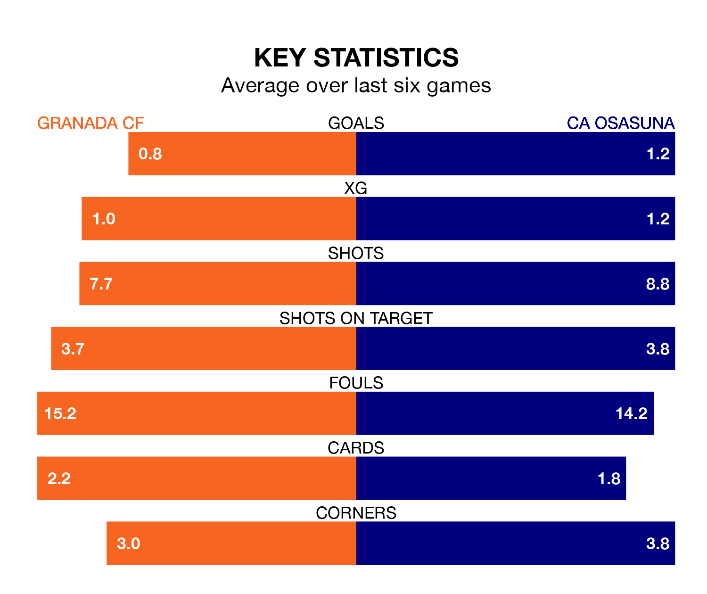

Granada CF are on a poor run ahead of hosting CA Osasuna at the Estadio Nuevo Los Cármenes on Sunday, with just four points collected from their last six games.
Granada have picked up one win and one draw in their last six La Liga games, and face an Osasuna side whose last six games have brought two wins and four losses.
Granada are 19th in the table after 32 games, of which they have won three and drawn nine, earning 18 points.
Osasuna are eight places ahead of the hosts in 11th, with 11 wins and six draws putting them on 39 points.
In the last 10 years, Granada and Osasuna have played each other on 15 occasions. Granada won five of them, Osasuna six, and they drew four times.
On average, Granada scored 0.9 goals and Osasuna 1.0 in those matches.
Their last meeting was on October 20, when Osasuna won 2-0 at home.
In Ante Budimir, the away team have one of the league's most on-form strikers so far this season. He has notched 16 goals in 31 appearances, to sit third in the scoring charts.
His goal rate of one every 149 minutes is quicker than that of Myrto Uzuni, Granada's top scorer with a goal every 228 minutes, and a total of 10 goals in 31 games.
With 33 goals in 32 games so far this season, Granada are scoring at below the league average rate with 1.0 goals per game. And they are conceding more than average, letting in 61 goals at a rate of 1.9 per game.
Osasuna are also below average scorers, with 1.2 goals per game, compared to a league average of 1.3. They have conceded 1.4 goals per game.
Granada's last match was on April 19, a 1-1 draw against Athletic Club Bilbao, with Iñaki Williams getting the goal for Granada.
Osasuna lost 2-1 against Rayo Vallecano last time out, on April 20, with Moi Gómez on the scoresheet.
Updated: 07:59 (UTC), 26/04/24